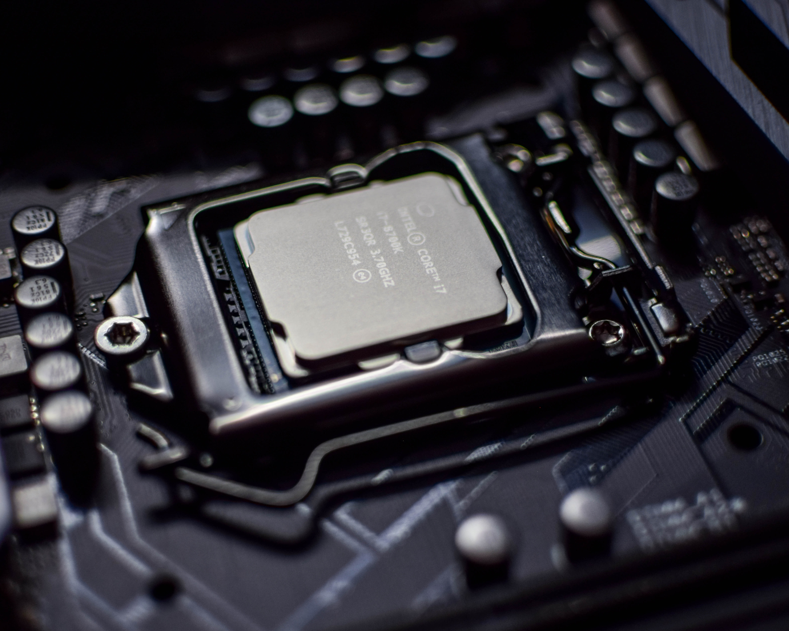

CPU는 기억, 해석, 연산, 제어라는 매우 중요한 역할들을 도맡기 때문에 컴퓨터의 대뇌라고 할 정도로 매우 중요한 부분 중 하나다. 프로그램의 명령어를 해석하여 데이터를 연산/처리를 하고 그렇게 돌아가도록 제어해주는 부분, 혹은 그 기능을 내장한 칩을 의미한다. 컴퓨터가 동작하는 데 필요한 모든 계산을 처리하며 컴퓨터를 뇌에 비유하자면 단기기억 담당은 RAM, 장기기억은 하드디스크, CPU는 사고를 담당하는 대뇌피질 정도로 볼 수 있겠다. 대뇌피질 없이 인간의 사고가 성립하지 않듯이 컴퓨터도 CPU 없이는 아무런 기능도 하지 못하는 고철일 뿐이다. 
시스템 창에서 컴퓨터에 관한 기본정보를 볼때 프로세서라고 적혀있는 곳 옆에 있다.
제품명이 써져있으며 오른쪽에는 GHz단위의 숫자가 적혀있는데 이것은 초당 싸이클
횟수인 클럭을 의미하며[1] 당연히 숫자가 높으면 높을수록 좋다. RAM과 SSD와 함께
체감 성능에 가장 큰 영향을 주는 부품으로 컴퓨터를 처음 구매할 때부터 매우 주의해야 한다.
RAM이나 SSD같은 컴퓨터의 속도를 올려주는 다른 요소들은 차후에도 충분히 업그레이드가 가능하지만
CPU는 메인보드에 따라서 불가능한 경우가 매우 많다.[2] 물론 교체가 가능한 모델도 있지만.
특히 노트북은 아예 교체가 불가능하게 메인보드에 박혀서 나오니[3] 기대는 안 하는게 좋고
교체 가능한건 조립형 데스크탑 정도다. 공식대리점에서 판매하는 데스크탑 역시 박혀서 나와서
교체가 불가능한 경우는 있지만 대부분 교체는 가능한 구조.
따라서 CPU는 구매후 사실상 그대로 컴퓨터 메인보드가 수명을 다할 때까지 쓴다고 생각하면 되며
조립형 데스크탑의 경우에는 부품 호환성을 고려하여 교체를 할 수 있는 정도다.
과거에는 클럭 그 자체가 매우 중요했으나, 현 시점에서는 클럭 만이 CPU 성능을 좌우하는 것은 아니며,
예를 들어 제품 세대 및 아키텍쳐에 따른 IPC(클럭당 성능)[4]도 중요한데 과거 펜티엄 D 3.4GHz가
1세대 코어2 듀오 1.8GHz에 성능이 밀린 것만 봐도 알 수 있다. 또한 클럭만 높이거나 IPC만 높이는
것도 한계가 있어서 현재는 멀티 코어의 방향으로 선회한 지 오래되었기 때문에 실질적으로 코어 수도
중요하며, 코어 수에 따라 상위 하위 제품이 갈리는 경우가 많다.
즉, 클럭 속도, IPC, 코어 수에 따라 CPU 성능이 결정된다. 부차적으로 성능 향상을 위한
코어당 양방향 SMT[5] 외에도 다양한 기술 및 명령어, 그리고 성능 면 이외에도 미세 공정에
따른 발열 감소, 전력 소모 절감 등도 고려할 수 있다.
CPU 중에서도 각종 전자 부품과 반도체 칩을 하나의 작은 칩에 내장한 형태를 마이크로프로세서라고 한다.
마이크로프로세서는 '전기 밥통'이나 '냉장고'에 쓰이는 낮은 성능의 제품부터 슈퍼컴퓨터에 쓰이는 높은 성능의
제품까지 매우 다양하다. 마이크로프로세서들 가운데 가장 복잡하고 성능이 높은 제품은 컴퓨터의 연산 장치로 쓰인다.
조립컴퓨터 견적에서 돈을 많이 먹는 부품 중 하나. 각 부품의 업그레이드가 특정 성능을 올려준다면 CPU는
일단 컴퓨터 전체적인 성능의 베이스, 알파이자 오메가 격이다. 물론 게임할때는 CPU가 안 좋아도 그래픽카드가
좋으면 CPU가 좋고 그래픽카드가 안 좋은 것보다는 좋은 퍼포먼스를 낸다고 알려져 있지만, CPU가 연산을 지시하기
때문에 그래픽 카드가 아무리 좋더라도 CPU가 좋지 않다면 CPU 속도에 맞춰지기 때문에 제 성능을 발휘하지 못한다.
[6] 즉, 못해도 둘 다 동급으로 맞춰 줘야 한다는 이야기. 다만 요즘 나오는 대다수의 CPU는
충분히 좋기 때문에 이 말이 통하는 게 어쩌면 당연할 수밖에 없다.[8]
그러나, 60프레임 이상의 성능을 뽑아 내기위해서는 CPU 또한 좋아야한다. 프레임이 높을수록 지시 연산이
크게 증가하여 병목 현상이 올 수 있기 때문이다. 특히나 요즘에는 120Hz 내지는 144Hz 주사율의 모니터가
유행하고 있기 때문에 이러한 프레임을 뽑아내기 위해 병목 현상을 막고자 CPU의 중요성 또한 올라갔다.
그러므로 너무 싸거나 비싼 CPU를 사지 말고 자신의 용도에 맞게 적당한 제품을 구매하도록 하자. 단,
장기적으로 사용할 경우 조금 오버해서라도 상위제품을 구매하는 게 좋을 수 있다.